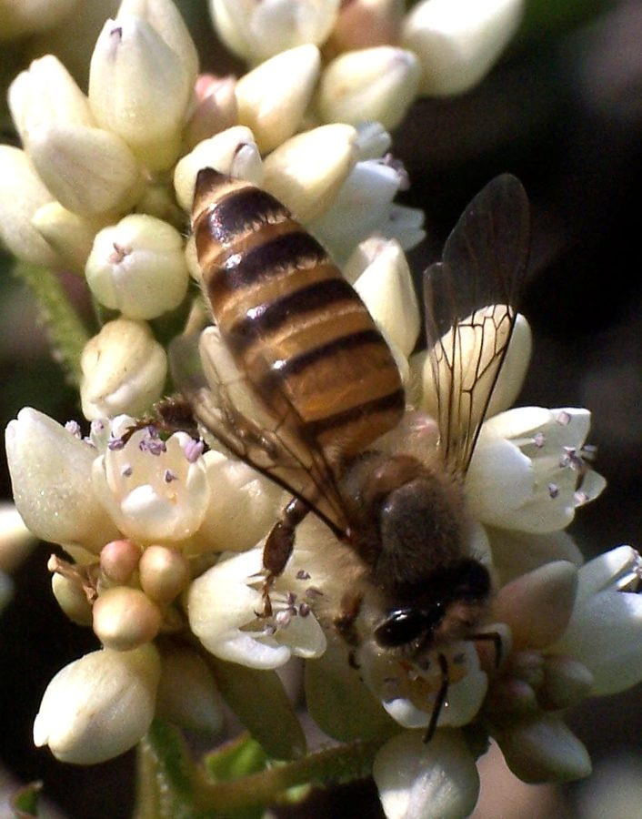

मधुमक्खीAsian Honey Bee
Apis cerana · Apidae · INS-0007

- Scientific name
- Apis cerana Fabricius, 1793
- Family
- Apidae
- Hindi
- मधुमक्खी / देसी मधुमक्खी
- Status here
- native
- IUCN
- not evaluated
When to look कब देखें
Present all year.
Asian Honey Bee / Eastern Honey Bee
Apis cerana Fabricius, 1793 — Apidae
देसी मधुमक्खी — Apis cerana — एशिया की मूल मधुमक्खी है, जो हज़ारों साल से भारतीय खेती और जंगल का आधार रही है। यूरोपीय मधुमक्खी (Apis mellifera) के मुकाबले यह छोटी है, कम शहद देती है — पर एशियाई परजीवियों से लड़ने में ज़्यादा सक्षम है और देशी फसलों की परागण के लिए अधिक अनुकूल। पूर्वी UP के आम बागों में, सरसों के खेतों में, और धनिये के फूलों पर — यही मधुमक्खी काम करती है।
Quick Identification त्वरित पहचान
| Feature | Description |
|---|---|
| Size | Worker 11–13 mm; smaller than European honey bee (A. mellifera, 15–18 mm) |
| Colour | Abdomen with alternating amber and dark brown/black bands; thorax dark brown |
| Colony | Medium — 6,000–10,000 workers (mellifera: 50,000+) |
| Nest | Single comb in cavity (hollow tree, wall); not exposed like Apis dorsata |
| Behaviour | More defensive than mellifera; rapid absconding when disturbed |
Field tip: The size difference from European bees is subtle without comparison. Behaviour is easier — cerana workers are faster moving on comb, more likely to abscond when the hive is disturbed, and tend to form smaller colonies in natural cavities.
Morphology आकारिकी
| Caste / Feature | Measurement |
|---|---|
| Worker body length | 11–13 mm |
| Queen body length | 17–20 mm |
| Drone body length | 14–16 mm |
| Worker forewing length | 7.5–9.0 mm |
| Worker wingspan | 20–22 mm |
Worker: 11–13 mm. Abdomen with 4–5 alternating bands of amber/yellow and dark brown-black. Thorax dark. Hairy body — pollen-trapping hairs. Hind legs with pollen baskets (corbiculae) — orange balls of pollen visible in flight.
Queen: 17–20 mm; longer abdomen. Lays 800–1200 eggs per day at peak season (less than mellifera's 2000+).
Drone: 14–16 mm; broader, darker; no stinger. Present March–June; expelled from colony in autumn.
Colony structure: A single colony is a superorganism — a queen, tens of thousands of workers (sterile females), and seasonal drones. Each worker lives 6–8 weeks during summer foraging; queen lives 2–3 years.
Ecological Role पारिस्थितिक भूमिका
Native pollinator network: Apis cerana co-evolved with the flora of South and Southeast Asia over millions of years. It is the primary pollinator of many native crops — mustard, sesame, coriander, lentils, sunflower, cardamom, litchi, mango — and most wild flowering plants in eastern UP. Without honey bee pollination, crop yields in many species drop 30–70%.
Kadam-Cerana interaction: The fragrant globose flower heads of Kadam (FLR-0022) are a major nectar source for honey bee colonies in July–September. A flowering kadam tree may be visited by thousands of bees per hour.
Varroa resistance: Apis cerana evolved alongside the Varroa mite (Varroa jacobsoni) and has developed behavioural resistance — worker bees groom mites off each other and remove mite-infested brood cells. Apis mellifera (the European introduction) has no such resistance and has suffered catastrophic global colony collapse due to Varroa destructor mites.
Absconding: When a colony faces extreme threat (predator attacks, pest pressure, food shortage), A. cerana will abscond — the entire colony leaves the nest and relocates. This is an adaptive survival strategy unique to Asian bees, allowing them to move quickly to new habitats.
Life Cycle / Phenology जीवन चक्र
| Month | Event |
|---|---|
| Dec–Jan | Reduced foraging; cluster forms to stay warm |
| Feb–Mar | Colony expands; queen egg-laying increases |
| Mar–May | Swarming — colony splits; old queen leaves with half workers; new queen hatches |
| Apr–Jun | Maximum foraging in mustard, mango, sesame bloom |
| Jul–Sep | Active in kadam, monsoon flowers |
| Oct–Nov | Honey stores built up for winter |
Swarming: The primary reproduction of honey bee colonies. A swarm (old queen + ~3,000 workers) leaves the original hive and settles temporarily on a branch or wall while scouts search for a new cavity. A temporary swarm cluster can be seen hanging like a rugby ball from a branch — spectacular and entirely harmless.
Worker lifecycle: Egg (3 days) → larva (6 days, fed royal jelly then pollen+honey) → pupa (12 days, sealed cell) → adult. Young workers do internal hive duties (nurse, builder, guard); older workers forage.
Agricultural / Human Relevance कृषि एवं मानव उपयोग
Traditional apiculture: Eastern UP has a tradition of keeping Apis cerana in simple hive boxes ("माचियाँ" — wooden or bamboo frames). Honey yield: 4–8 kg per hive per year (much less than mellifera's commercial 40–80 kg), but the honey is valued for its distinctive flavour and medicinal reputation.
Honey (शहद): Natural honey has antibacterial properties (hydrogen peroxide, methylglyoxal). Traditional uses: wound dressing, cough remedy, general tonic. "देसी शहद" commands premium prices in UP markets (₹400–800/kg vs. ₹150–300/kg for commercial mellifera honey).
Wax (मोम): Beeswax from cerana is used in: skin lotions, candles, traditional incense, wood polish, and as a protective coating. Cottage industry scale.
Bee line honey hunting: Traditional hunters in forests follow bee flight lines ("bee lining") to locate natural hives in hollow trees — a traditional knowledge system practised in parts of eastern UP.
Government promotion: National Bee Board (Ministry of Agriculture) promotes Apis cerana apiculture for tribal and marginal farmers in UP as a supplementary livelihood.
Expected Locally स्थानीय रूप से अपेक्षित
Not a field record. Written from published accounts for eastern Uttar Pradesh. No confirmed local sighting yet — if you have seen it, that is what the atlas needs.
अभी तक स्थानीय पुष्टि नहीं। यह विवरण प्रकाशित स्रोतों से है, किसी अवलोकन से नहीं।
In Basti district, the Asian Honey Bee is a frequent visitor to rural home gardens, crop fields, and orchards. Mango orchards in Basti provide prime nesting hollows and forage during the spring blossom. Swarms are commonly observed clustered on trees like babool in March and April. Local farmers often recognize that active pollination by desi madhumakhi results in better mustard seed yields, and they actively avoid pesticide sprays during mid-day when the bees are foraging.
Distribution वितरण
Global range: Widespread across South, East, and Southeast Asia, from India and Sri Lanka east to China, Japan, Korea, and south to Indonesia.
In India: Found throughout the country, from the plains up to elevations of about 2,500 m in the Himalayas.
In Uttar Pradesh: Distributed across all districts, commonly found in agricultural zones, forest areas, and urban green spaces.
In Basti district / eastern UP: Abundant and active year-round; nests in wall cavities of old buildings and hollows of mature orchard trees like mango.
Range notes: No significant range changes documented.
Research Questions शोध प्रश्न
- What is the current population density of wild Apis cerana colonies per km² in Basti district — and is this increasing or decreasing with changing land use?
- Which crop species in eastern UP show the greatest yield improvement with honey bee pollination — and are farmers aware of this service?
- Has the introduction of Apis mellifera commercial colonies displaced A. cerana from traditional apiculture in eastern UP?
- Does Apis cerana show grooming behaviour against Varroa jacobsoni in UP populations — is this behaviour measurable in field colonies?
- Can traditional knowledge of bee-lining (following bees to locate honey tree) be documented among older forest-users in Terai fringe villages?
Similar Species मिलती-जुलती प्रजातियाँ
| Species | How to distinguish |
|---|---|
| Apis mellifera (European Honey Bee) | Larger (15–18 mm); yellow-orange banding; in commercial hive boxes only in India |
| Apis dorsata (Rock/Giant Honey Bee, भँवर) | Much larger (17–20 mm); builds single large exposed comb on cliffs, tall trees; very aggressive |
| Apis florea (Dwarf Honey Bee, छोटी मधुमक्खी) | Very small (7–8 mm); single small exposed comb in shrubs; red-brown front abdomen |
Taxonomy & Classification वर्गीकरण
Original description. Apis cerana was described by Johan Christian Fabricius in 1793 in Entomologia Systematica, 2: 327. Type locality: China. The genus name Apis is Latin for bee, and the species epithet cerana is derived from cera, the Latin word for wax.
Subspecies. Several subspecies are recognised across its wide range:
| Subspecies | Authority | Range | Notes |
|---|---|---|---|
| Apis cerana indica | Fabricius, 1798 | Indian subcontinent | This is the yellow plains strain present in eastern UP |
| Apis cerana cerana | Fabricius, 1793 | Northern India, China | Black hill strain adapted to colder climates |
| Apis cerana javana | Enderlein, 1906 | Java, Indonesia | Localized island subspecies |
| Apis cerana nuluensis | Tingek, Koeniger & Koeniger, 1996 | Borneo | High-altitude mountain bee |
Family and order placement. Belongs to the order Hymenoptera (ants, bees, wasps), suborder Apocrita, family Apidae, genus Apis, subgenus Apis. The family Apidae contains over 5,700 species of bees, with the genus Apis representing the true honey bees.
Phylogenetic notes. Apis cerana is the sister species to Apis koschevnikovi and Apis mellifera. They share a recent common ancestor, and molecular studies suggest that Apis cerana and Apis mellifera diverged when their ancestral populations became separated during the glaciation periods of the Pleistocene.
IUCN status rationale. This species has not been formally assessed by the IUCN Red List. As a widely kept domesticated and feral native bee, it remains common, but wild populations are increasingly threatened by habitat loss, excessive pesticide use, and competition from introduced Apis mellifera colonies.
Photo Gallery फ़ोटो गैलरी
Atlas Connections संबंधित प्रजातियाँ
- FLR-0022 Kadam Tree — major nectar source in monsoon season
- FLR-0021 Mahua — secondary flower visitor; some pollination
- FLR-0009 Neem — neem flowers visited by bees; natural pest-control environment
- FLR-0023 Custard Apple — NOT primarily pollinated by bees (coleopterophily) — contrast example
- INS-0008 Weaver Ant — competitor for mango tree resources; occasional antagonism
References संदर्भ
- Fabricius, J.C. (1793). Entomologia Systematica emendata et aucta, Tomus 2. Christ. Gottl. Proft, Hafniae.
- Ruttner, F. (1988). Biogeography and Taxonomy of Honeybees. Springer-Verlag, Berlin.
- Oldroyd, B.P. & Wongsiri, S. (2006). Asian Honey Bees: Biology, Conservation and Human Interactions. Harvard University Press, Cambridge.
- Nair, K.S. (2007). Apis cerana in Indian agriculture — pollination services. Indian Bee Journal, 69(1), 12–18.
- National Bee Board (2020). Status Report on Honey Bee Keeping in Uttar Pradesh. NBB, New Delhi.
- GBIF Occurrence Data — Apis cerana, India (2026).
Source file: species/fauna/insects/asian_honey_bee.md